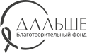
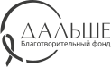

Розовый октябрь
Этой осенью Ayris Silk впервые присоединяется
к всемирному движению по борьбе с раком груди
«Розовый Октябрь». Для нас важно, чтобы забота
и внимание к себе стали частью вашей повседневной
жизни. Регулярные обследования – это и есть любовь к себе.
 
